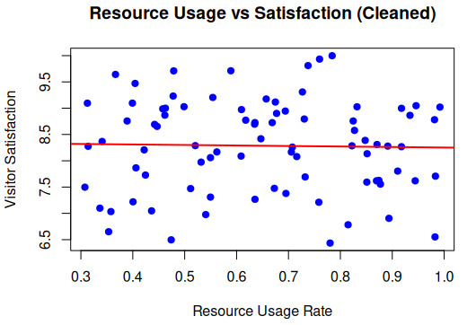
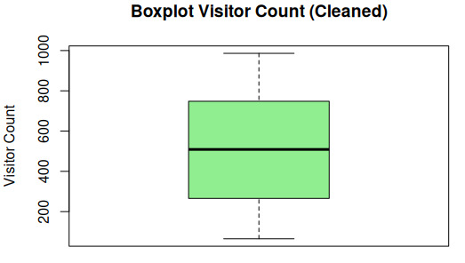
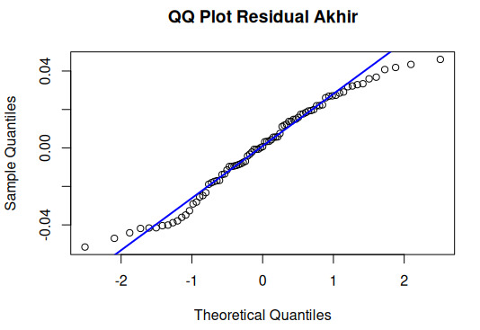
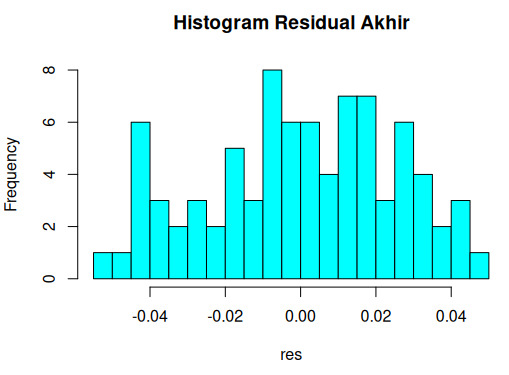

Information Systems | Universitas Bina Sarana Informatika
alfiantonico9@gmail.com
The development of Internet of Things (IoT) technology has brought significant changes in data management in the tourism sector. This study aims to analyze the effect of visitor count, resource utilization rate, and environmental factors on tourist satisfaction using multiple linear regression. The final model produced an R-squared value of 0.623.
Keywords: IoT, Tourism, Linear Regression, Tourist Satisfaction, Data Analytics
Here are the visualizations from RStudio analysis:

Figure 1: Scatter Plot showing negative correlation between Resource Usage Rate and Visitor Satisfaction

Figure 2: Boxplot of Visitor Count showing outliers that affected the initial model

Figure 3: QQ-Plot of Residuals. Points close to the line indicate normal distribution (p = 0.05405)

Figure 4: Histogram of Residuals showing symmetric distribution
Note: Upload your .png/.jpg files to the same github repo folder and match the file names above.
| Variable | Type | Description |
|---|---|---|
| visitor_satisfaction | Float Y | Tourist satisfaction score (0-10) |
| visitor_count | Int X1 | Number of visitors per hour |
| resource_usage_rate | Float X2 | Facility utilization rate (0-1) |
| temperature | Float X3 | Environmental temperature (°C) |
| air_quality_index | Int X4 | Air Quality Index |
| noise_level | Float X5 | Noise level (dB) |